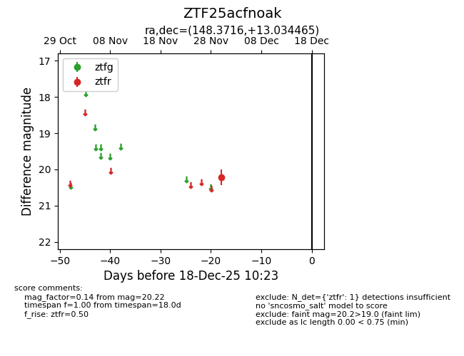
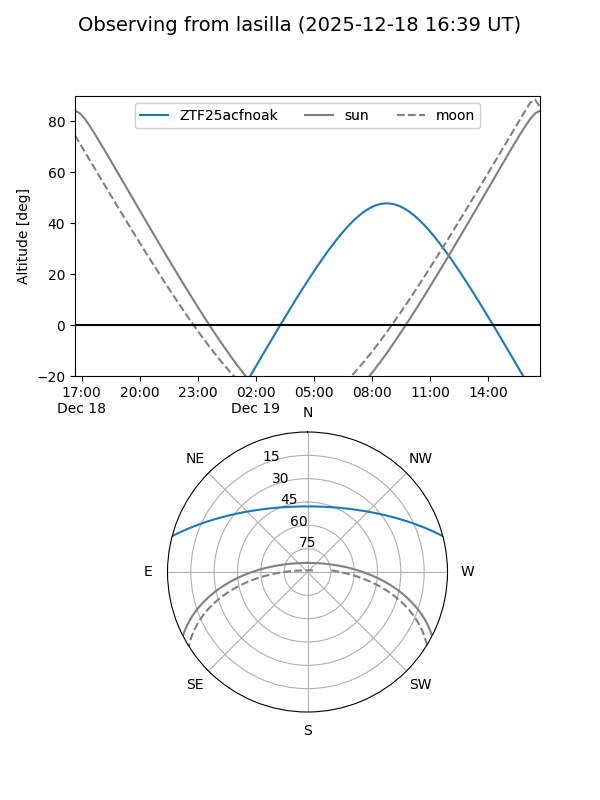
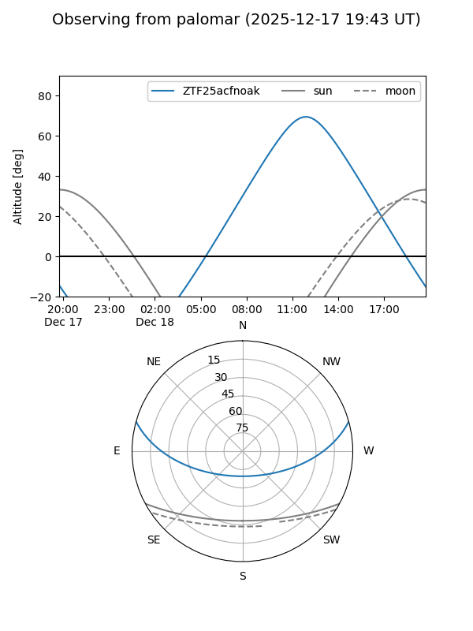

ZTF25acfnoak
Target ZTF25acfnoak at 2025-12-18 11:17
Aliases and brokers:
FINK: fink-portal.org/ZTF25acfnoak
Lasair: lasair-ztf.lsst.ac.uk/objects/ZTF25acfnoak
ALeRCE: alerce.online/object/ZTF25acfnoak
alt names
ZTF25acfnoak (ztf,fink_ztf)
Coordinates:
equatorial (ra, dec) = 148.3716,+13.03447
equatorial (HMS+DMS) = 09:53:29.18,+13:02:04.08
galactic (l, b) = (222.5907,+46.17009)
Photometry
last ztfr=20.22
1 ztfr detections
Lightcurve

Visibility


Additional plots